| Album Title |
Release Date |
Fun Facts |
Album Art and Links |
| Bleach |
June 15, 1989 |
This album was produced by the legendary Jack Endino who previously produced works with Soundgarden and Mudhoney. |
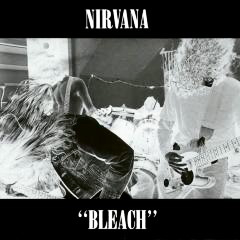 |
| Nevermind |
September 24, 1991 |
Nivermind was primarily recorded in Sound City Studios, (which Dave Grohl later made a tribute film about the Neve console he bought from there) and Legendary Producer Butch Vig, but later turned to Andy Wallace to mix the album. |
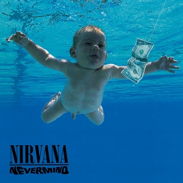 |
| Incesticide |
December 12, 1992 |
Kurdt Kobain painted the album cover for Incesticide, incorrectly attributing himself. |
 |
| In Utero |
September 21, 1993 |
While Steve Albini at Pachyderm Studio was in charge of producing and engineering the last Nirvana studio album, a large chunk of the reverbs recorded for the album were actually outside of the studio in kitchens and more natural sound environments. |
 |
| MTV Unplugged in New York |
November 1, 1994 |
The goal of the MTV Unplugged series was to get rock musicians in playing their hit songs on acoustic instruments, but Kurt demanded that his acoustic had to be played through effects and an amp, so they ended up creating a fake amplifier for Kurt. |
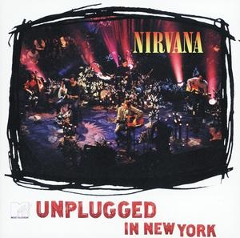 |
| Singles |
December, 1995 |
The Singles album did not have a large majority of success and only topped out at 17th in the French Singles Chart and 101 in the UK albums chart in 1995, the year of its release. |
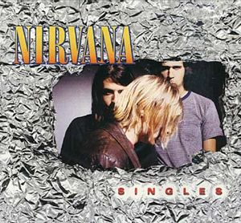 |
| From the Muddy Banks of the Wishkah |
October 1, 1996 |
This album was originally inteded to be released as a two disc set with MTV Unplugged prior to Cobain's death. |
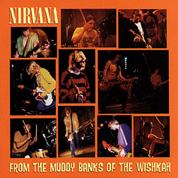 |
| Nirvana |
October 29, 2002 |
The best of album had long been held up due to Courtney Love's lawsuit with Novoselic and Grohl due to the potential of the song titled "Your Know You're Right" and its release format. |
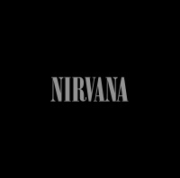 |
| With the Lights Out |
November 23, 2004 |
This boxset contained many rare releases such as live recordings and rehearsals recorded earlier on boom-boxes |
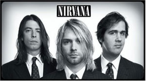 |
| Silver: The Best of the Box |
November 1, 2005 |
The cover art was decided on by Kurt Cobain's daughter showcasing many of the demo tapes Nirvana had created. |
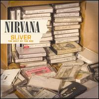 |
| Live at Reading |
November 3, 2009 |
This CD/DVD was originally a bootlegged recording from a 1992 performance at the Reading Festival, that had been color corrected and remastered. |
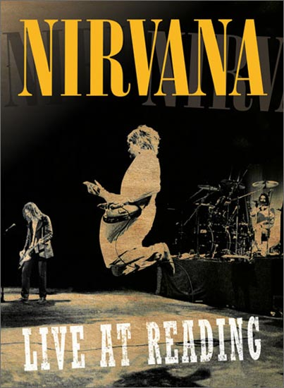 |
| Icon |
August 31, 2010 |
The second greatest hist collection from Nirvana as part of Universal's takeover of Geffen, as part of the Icon series |
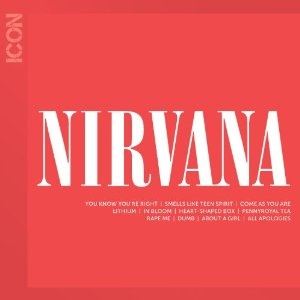 |
| Nevermind: The Singles |
November 25, 2011 |
While this was just released as a limited edition of 5000 copies on 10" vinyls as part of Record Store Day in 2011, the album still peaked at 3 on the US Billboard Vinyl Albums Chart. |
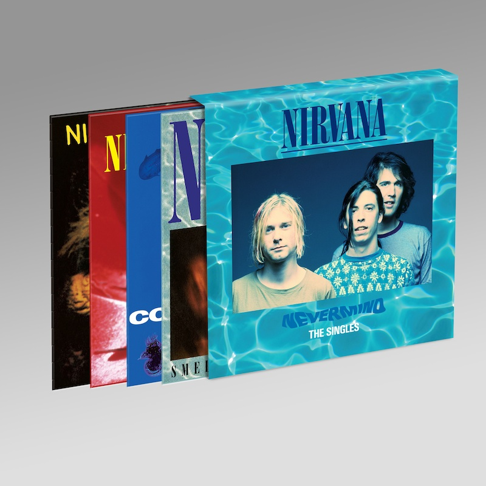 |